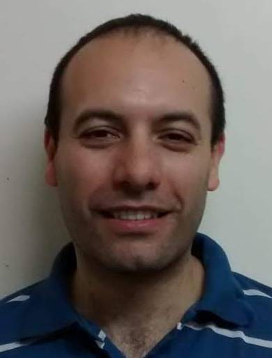

CURRICULUM VITAE

Descripción personal:
- Nombre: Enrique Martín Garay
- Edad: 40 años
- Estado civil: Casado
Educación:
- Ingeniero Electrónico. UTN-FRC
- Bachiller y Técnico medio en Electricidad y Electrónica. IPEM N°69 – Jesús María - Córdoba
Experiencias Laborales:
- 01/2017—11/2021 - Puesto: Desarrollador| Área: Diseño y Desarrollo | Empresa: CORMEDIC SA
- 01/2016—01/2017 - Puesto: Operario de línea alta gama| Área: Producción | Empresa: CORMEDIC SA
- 08/2013—08/2015 - Puesto: Técnico| Área: Ingeniería | Empresa: OPENTEC
- 02/2013—08/2015 - Puesto: Help desk| Área: IT | Empresa: SOFTEL
- 11/2011—12/2012 - Puesto: Operario| Área: Producción | Empresa: DITEL
Skill:
- Creatividad
- Trabajo en equipo
- Resolución de problemas
- Comunicación oral y escrita
- Diseño PCB Eagle electronics
- Diseño software PIC con XC8-MPLAB
- Inglés técnico: medio
Hobbies:
- Escuchar música
- Ver películas/series
- Manejar
Porque estudio FULL STACK?
Actualmente me encontraba buscando empleo referido a mi profesión, al no poder encontrar nada me recomendaron SOY HENRY.
Me gusta la programación por eso vi una gran posibilidad en hacer este curso, de poder trabajar y dedicarme a algo que me apasiona.
Mis expectativas están relacionadas con lo dicho anteriormente, trabajar programando en un mercado laboral hasta ahora desconocido.